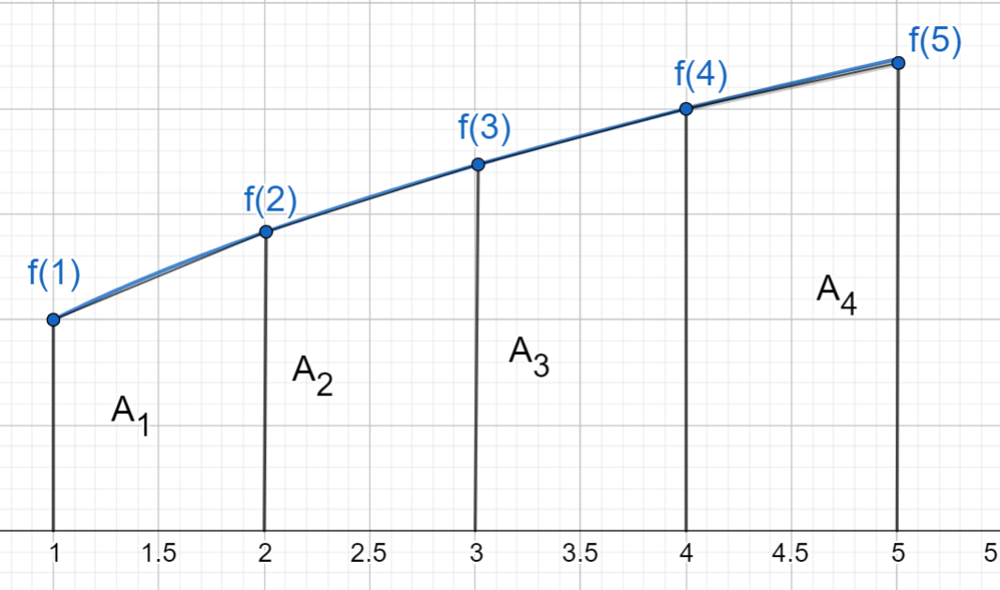
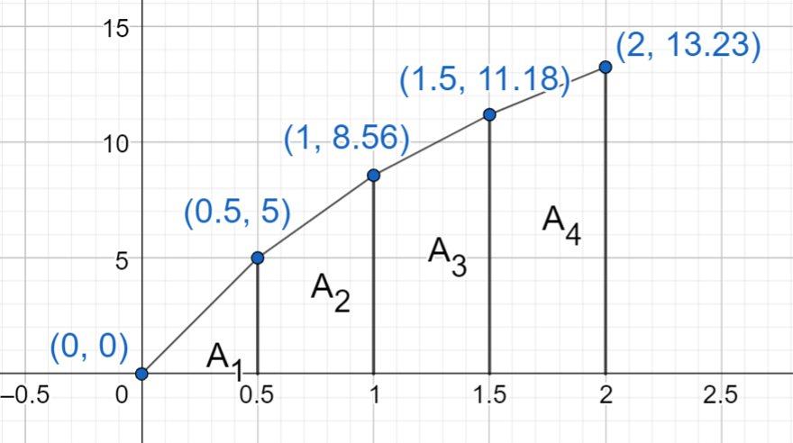

Puolisuunnikassääntö
Puolisuunnikassääntö#
Puolisuunnikassääntö on eräs numeerisen integroinnin menetelmä. Numeerinen integrointi tarkoittaa tässä yhteydessä sitä, että lasketaan funktion määrätyn integraalin arvo, vaikka funktion lauseke ei ole tiedossa. Menetelmää voi käyttää myös silloin, kun funktion lauseke on sellainen, että sitä on vaikeaa tai mahdotonta integroida.
(TÄHÄN PÄIVITTYY KUVA!)
Aloitetaan jakamalla tuntemattoman funktion \(f(x)\) kuvaajan ja \(x\)-akselin väliin jäävä alue yhtä leveisiin osiin. Jos osia on \(n\) kappaletta, niin jokaisen osan leveys on
\(h=\frac{x_2-x_1}{n}\).
Approksimoidaan funktion kuvaajan ja \(x\)-akselin väliin jääviä alueita \(A_1, A_2, \dots A_n\) puolisuunnikkaina. Puolisuunnikkaan \(A_i\) vasemman reunan korkeus on \(f(x_1+(i-1)h)\) ja oikean reunan korkeus on \(f(x_1+ih)\). Siis esimerkiksi alueen \(A_1\) vasemman reunan korkeus on \(f(x_1)\) ja oikean reunan korkeus on \(f(x_1+h)=f(x_2)\).
Edelleen voidaan kirjoittaa puolisuunnikkaan \(A_i\) pinta-ala: \(A_i=\frac{f(x_1+(i-1)h)+f(x_1+ih)}{2}h\)
Koko alueen pinta-ala, eli määrätty integraali välillä \(x_1 \leq x \leq x_2\), saadaan summana kaikkien puolisuunnikkaiden pinta-aloista: \(\Sigma_{i=1}^n A_i\).
Tietokoneella laskettaessa puolisuunnikkaita voi olla hyvinkin suuri määrä, sillä pinta-alojen laskun voi automatisoida. Valmiitakin työkaluja puolisuunnikassäännön käyttöön on olemassa. Seuraavissa esimerkeissä puolisuunnikkaita on vain muutamia. Mitä useammalla puolisuunnikkalla aluetta approksimoidaan, sitä lähemmäs todellista arvoa laskussa päästään.
Esimerkki
Laske määrätty integraali \(\int_1^5 \sqrt{x}~\text{d}x\) puolisuunnikassäännöllä. Käytä osavälien leveytenä 1 yksikköä. Vertaa tulosta määrätyn integraalin tarkkaan arvoon.
Ratkaisu

Kuvassa on esitetty välin \([1,5]\) jako osaväleihin \([1,2], [2,3], [3,4]\) ja \([4,5]\). Jokaisen välin leveys on \(h=1\). Aloitetaan laskemalla pinta-ala \(A_1\). Vasemman reunan korkeus on \(f(1)=\sqrt{1}=1\), ja oikean reunan korkeus on \(f(2)=\sqrt{2}\). Näin ollen ensimmäisen puolisuunnikkaan pinta-ala on
\(A_1=\frac{1+\sqrt{2}}{2}\cdot 1=\frac{1+\sqrt{2}}{2}\)
Vastaavasti saadaan muiden puolisuunnikkaiden alat:
\(A_2=\frac{\sqrt{2} +\sqrt{3}}{2}\cdot 1=\frac{\sqrt{2} +\sqrt{3}}{2}\)
\(A_3=\frac{\sqrt{3} +\sqrt{4}}{2}\cdot 1=\frac{\sqrt{3} + \sqrt{4}}{2}\)
\(A_4=\frac{\sqrt{4} +\sqrt{5}}{2}\cdot 1=\frac{\sqrt{4}+\sqrt{5}}{2}\)
Yhteensä pinta-ala on siis
\(\begin{align} A & = A_1 + A_2 + A_3 + A_4 \\ & = \frac{1}{2} \left(\sqrt{2}+\sqrt{3}+\sqrt{3}+\sqrt{4}+\sqrt{4}+\sqrt{5}\right) \\ & = \frac{1}{2} \left(\sqrt{2}+2\sqrt{3}+2\sqrt{4}+\sqrt{5}\right) \\ & = \frac{1}{2} \left(\sqrt{2}+2\sqrt{3}+2\cdot 2+\sqrt{5}\right) \approx 6.764\end{align}\)
Tämän integraalilaskun voi laskea tarkastikin:
\(\begin{align} \int_1^5 \sqrt{x}~\text{d}x & = \int_1^5 x^{1/2}~\text{d}x \\ & = \frac{2}{3} 5^{3/2} - \frac{2}{3} 1^{3/2} \approx 6.787 \end{align}\)
Esimerkki
Kappaleen nopeutta mitattiin puolen sekunnin välein, ja saatiin seuraavat tulokset:
\(t\) (s) |
0 |
0.5 |
1.0 |
1.5 |
2.0 |
\(v\) (m/s) |
0 |
5.0 |
8.56 |
11.18 |
13.23 |
Laske matka, jonka kappale liikkui aikavälillä 0…2 sekuntia. Matka on nopeuden integraalifunktio.
Ratkaisu
Nyt funktion lauseke ei ole tiedossa. Lasketaan määrätty integraali puolisuunnikassäännöllä. Puolisuunnikkaat muodostetaan mittauspisteistä seuraavan kuvan mukaisesti:

Pinta-alat ovat:
\(A_1=\frac{0+5.0}{2}~\frac{\text{m}}{\text{s}}\cdot 0.5~\text{s}\)
\(A_2=\frac{5.0+8.56}{2}~\frac{\text{m}}{\text{s}}\cdot 0.5~\text{s}\)
\(A_3=\frac{8.56+11.18}{2}~\frac{\text{m}}{\text{s}}\cdot 0.5~\text{s}\)
\(A_4=\frac{11.18+13.23}{2}~\frac{\text{m}}{\text{s}}\cdot 0.5~\text{s}\)
Yhteenlaskettu pinta-ala on
\(\begin{align} A & = A_1 + A_2 + A_3 + A_3 \\ & = \frac{1}{2}\cdot 0.5~\text{m}\cdot (0+2\cdot 5.0 +2\cdot 8.56+2\cdot 11.18+13.23)~\frac{\text{m}}{\text{s}} \\ & \approx 15.68~\text{m}\end{align}\)